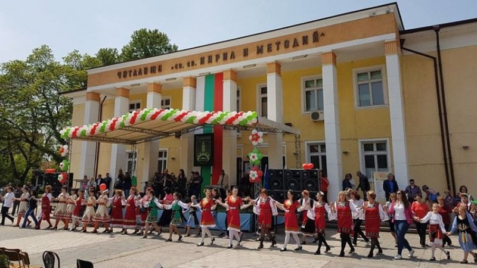
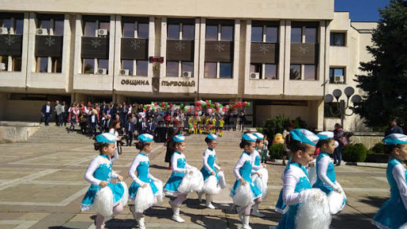
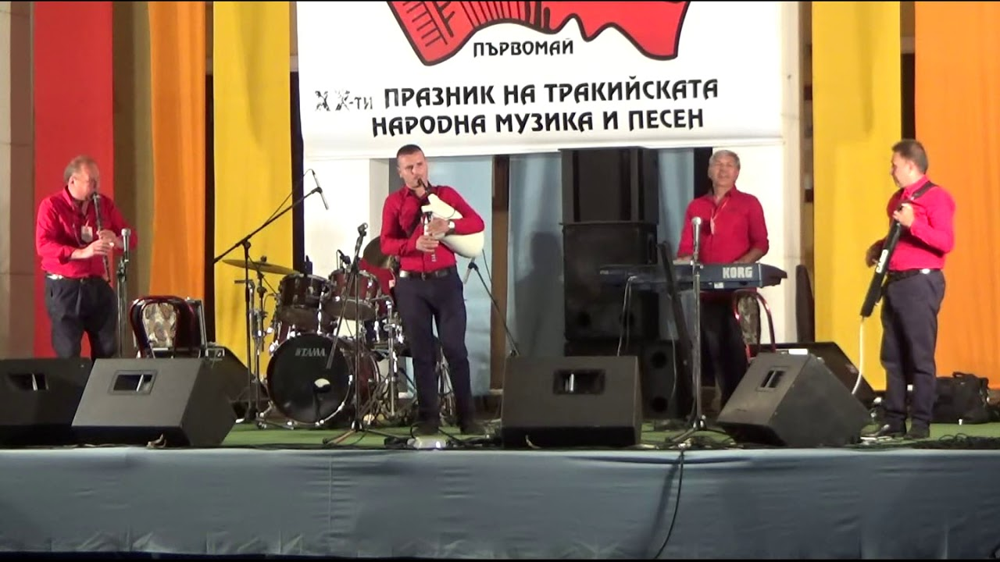

Първомай-Традиции и обичаи
Майски културни тържества
| Първи май освен ден на труда е и празник на град Първомай. През 2019г. за 47-ти път ще се проведат Майските културни тържества, а програмата включва цял месец театрални постановки, концерти, литературни конкурси и художествени изложби на творби. | Културните събития в Първомай започват още преди 120 години със създаването на местното читалище и първото театрално представление в града. С цветна и разнообразна програма отбелязват празника хората в Първомай. Много хора, деца и учители взимат участие и се забавляват през целият празник. |
|  |  |
Празник на тракийската народна музика и песен
| Тракийската народна музика- уникална, красива, вълнуваща отново огласи града. На 12 септември 2019г. започна ХXI-вия Празник на тракийската народна музика и песен „Първомай 2019”. В първия ден на празника всяка година организатори, участници и гости поднасят цвете на Паметника на тракийската народна музика и песен, прекланяйки се пред гения и таланта на множество известни и неизвестни творци, съхранили и обогатили тракийското музикално наследство. Организатори и участници сме щастливи, че усилията ни за съхраняване и предаване на българския фолклор са успешни. Реализацията на празника надминава очакванията им. |  |